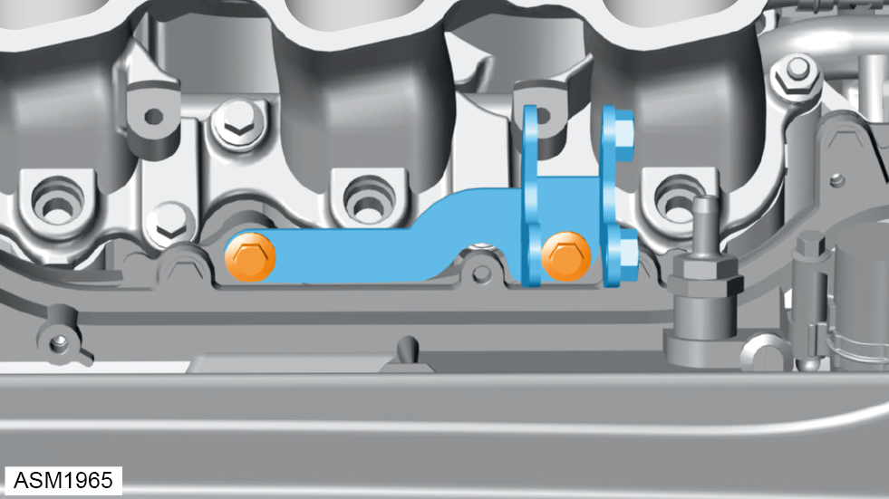
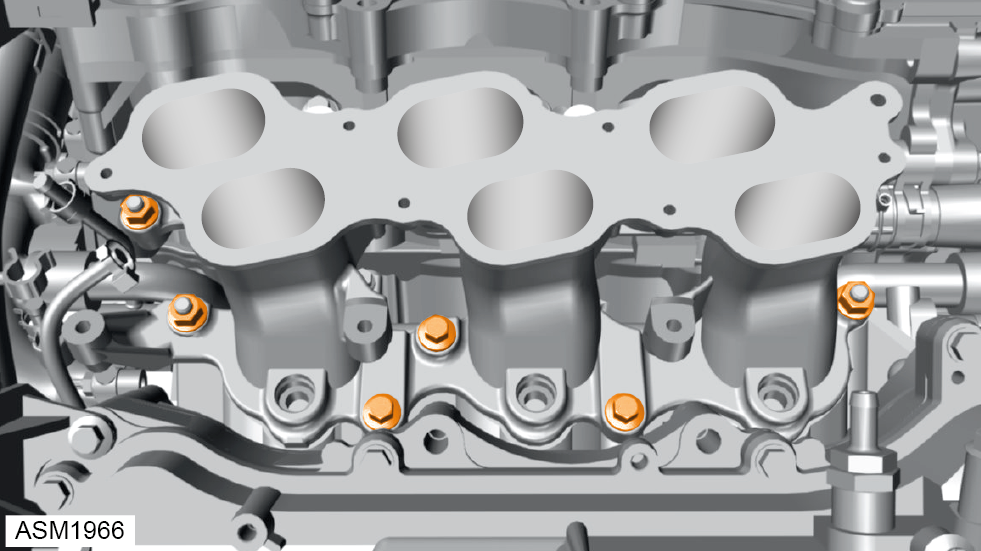
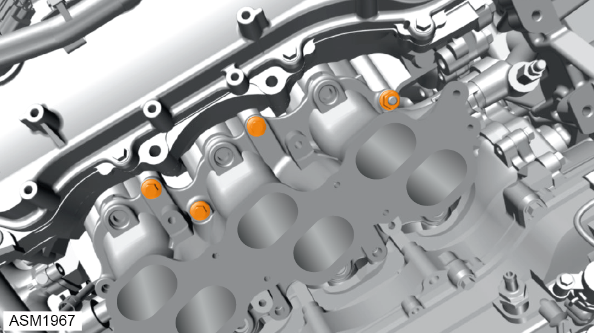
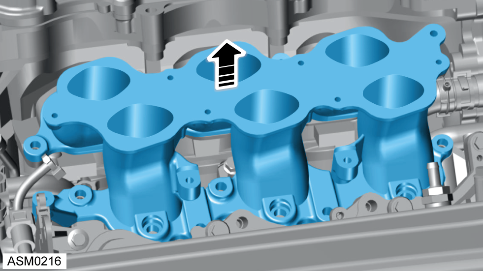

Intake Manifold - V6
Print
Operation Code: 42.07.07-02
Removal
- Remove fuel injectors. Refer to procedure.

- Remove M8x55 bolts (x2) securing lower supercharger bracket to engine. Torque 24 Nm.
- Remove lower supercharger bracket.

- Remove bolts (x3) securing intake manifold to engine. Torque 21 Nm.
- Remove nuts (x3) securing intake manifold to engine. Torque 21 Nm.

- Remove bolts (x3) securing intake manifold to engine. Torque 21 Nm.
- Remove nut securing intake manifold to engine. Torque 21 Nm.

- Remove intake manifold.
Installation
- Installation is the reverse of removal procedure except for the following:
NOTE: Clean the mating surfaces of the engine and the intake manifold.
- Renew gasket.